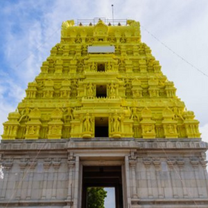

Rameshwaram) is a municipality in the Ramanathapuram district of the Indian state of Tamil Nadu. It is on Pamban Island separated from mainland India by the Pamban channel and is about 40 kilometres from Mannar Island, Sri Lanka. It is in the Gulf of Mannar, at the tip of the Indian peninsula.[1] Pamban Island, also known as Rameswaram Island, is connected to mainland India by the Pamban Bridge. Rameswaram is the terminus of the railway line from Chennai and Madurai. Together with Varanasi, it is considered to be one of the holiest places in India to Hindus and is part of the Char Dham pilgrimage
.
Rameswaram means "Lord of Rama" (Rāma-īśvaram) in Sanskrit, an epithet of Shiva, the presiding deity of the Ramanathaswamy Temple.[6] According to Hindu epic Ramayana, Rama, the seventh avatar of the god Vishnu, prayed to Shiva here to absolve any sins that he might have committed during his war against the demon-king Ravana in Sri Lanka.[7][3] According to the Puranas (Hindu scriptures), upon the advice of sages, Rama along with his wife Sita and his brother Lakshmana, installed and worshipped the lingam (an iconic symbol of Shiva) here to expiate the sin of Brahmahatya incurred while killing of the Brahmin Ravana.[8] To worship Shiva, Rama wanted to have a lingam and directed his trusted lieutenant Hanuman (avatar of Shiva himself) to bring it from Himalayas.[9][3] Since it took longer to bring the lingam, Sita built a lingam made of sand from the nearby seashore, which is also believed to be the one in the sanctum of the temple.[9] This account is well supported by the original Ramayana authored by Valmiki were it is written in yudha kanda.
The history of Rameswaram is centred around the island being a transit point to reach Sri Lanka (Ceylon historically) and the presence of Ramanathaswamy Temple. Tevaram, the 7th–8th century Tamil compositions on Shiva by the three prominent Nayanars (Saivites) namely Appar,[15] Sundarar and Thirugnanasambandar.[16] The Chola king Rajendra Chola I (1012 – 1040 CE) had a control of the town for a short period.[17] The Jaffna kingdom (1215–1624 CE) had close connections with the island and claimed the title Setukavalan meaning custodians of the Rameswaram.[18] Hinduism was their state religion and they made generous contribution to the temple.[18] Setu was used in their coins as well as in inscriptions as marker of the dynasty.